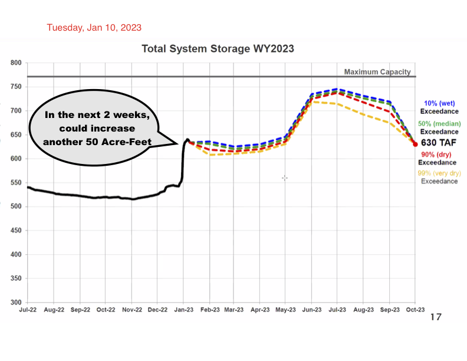

Why these lectures by UC Berkeley and East Bay Municipal Utility District are so important at this moment.
Contents
Why these lectures by UC Berkeley and East Bay Municipal Utility District are so important at this moment.#
What A Difference A Week Makes#
Note
This book is interactive, which means components of a page pull in real-time data from online sources, perform data analysis, and show the results. Data is open. How data becomes answers is clearly visible. The code is visible in active cells.

Note
Huge January rain volume will continue for two weeks. Graph shows model predictions under alternate possibilitiesfrom January to October 2023. Similar pattern last year had drought after March, so these predictions are conservative. Most of this rainfall cannot be stored. Some reservoirs must be drained to avoid overtopping. In future editions, today’s system storage will draw directly from real-time levels at Pardee and other reservoirs. Will add estimates of total water flow to Pacific.
import os
# Convert 630 Total Acre-Foot to gallons
TAF = 630
gallons = 630 * 325853.302098
gal = f'{round(gallons):,}'
print("630 Acre-Feet = ", gal , "gallons")
#os.system('say{:,}'.format(gal1))
630 Acre-Feet = 205,287,580 gallons
%pip install folium
import folium
m = folium.Map(
location=[37.801, -122.273],
zoom_start=10,
tiles='Stamen Terrain'
)
folium.Marker(
location=[37.8014, -122.273],
popup='Mt. Hood Meadows',
icon=folium.Icon(icon='cloud')
).add_to(m)
folium.Marker(
location=[37.8023, -122.273],
popup='Timberline Lodge',
icon=folium.Icon(color='green')
).add_to(m)
folium.Marker(
location=[37.8016, -122.2734],
popup='Some Other Location',
icon=folium.Icon(color='red', icon='info-sign')
).add_to(m)
m
Collecting folium
Downloading folium-0.14.0-py2.py3-none-any.whl (102 kB)
?25l ━━━━━━━━━━━━━━━━━━━━━━━━━━━━━━━━━━━━━━━━ 0.0/102.3 kB ? eta -:--:--
━━━━━━━━━━━━━━━━━━━━━━━━━━━━━━━━━━━━━━━ 102.3/102.3 kB 3.7 MB/s eta 0:00:00
?25hRequirement already satisfied: requests in /opt/hostedtoolcache/Python/3.8.16/x64/lib/python3.8/site-packages (from folium) (2.28.2)
Collecting branca>=0.6.0
Downloading branca-0.6.0-py3-none-any.whl (24 kB)
Requirement already satisfied: jinja2>=2.9 in /opt/hostedtoolcache/Python/3.8.16/x64/lib/python3.8/site-packages (from folium) (3.1.2)
Requirement already satisfied: numpy in /opt/hostedtoolcache/Python/3.8.16/x64/lib/python3.8/site-packages (from folium) (1.24.2)
Requirement already satisfied: MarkupSafe>=2.0 in /opt/hostedtoolcache/Python/3.8.16/x64/lib/python3.8/site-packages (from jinja2>=2.9->folium) (2.1.2)
Requirement already satisfied: certifi>=2017.4.17 in /opt/hostedtoolcache/Python/3.8.16/x64/lib/python3.8/site-packages (from requests->folium) (2022.12.7)
Requirement already satisfied: charset-normalizer<4,>=2 in /opt/hostedtoolcache/Python/3.8.16/x64/lib/python3.8/site-packages (from requests->folium) (3.0.1)
Requirement already satisfied: idna<4,>=2.5 in /opt/hostedtoolcache/Python/3.8.16/x64/lib/python3.8/site-packages (from requests->folium) (3.4)
Requirement already satisfied: urllib3<1.27,>=1.21.1 in /opt/hostedtoolcache/Python/3.8.16/x64/lib/python3.8/site-packages (from requests->folium) (1.26.14)
Installing collected packages: branca, folium
Successfully installed branca-0.6.0 folium-0.14.0
[notice] A new release of pip is available: 23.0 -> 23.0.1
[notice] To update, run: pip install --upgrade pip
Note: you may need to restart the kernel to use updated packages.
end toggle
# HIDDEN
from datetime import date
today = date.today()
# dd/mm/YY
d1 = today.strftime("%d/%m/%Y")
print("d1 =", d1)
# Textual month, day and year
d2 = today.strftime("%B %d, %Y %A")
print("d2 =", d2)
# mm/dd/y
d3 = today.strftime("%m/%d/%y")
print("d3 =", d3)
# Month abbreviation, day and year
d4 = today.strftime("%b-%d-%Y")
print("d4 =", d4)
d1 = 20/02/2023
d2 = February 20, 2023 Monday
d3 = 02/20/23
d4 = Feb-20-2023
next
from datetime import datetime
# datetime object containing current date and time
now = datetime.now()
print("now =", now)
# dd/mm/YY H:M:S
dt_string = now.strftime("%d/%m/%Y %A %H:%M:%S")
print("date and time =", dt_string)
now = 2023-02-20 23:54:13.955368
date and time = 20/02/2023 Monday 23:54:13
next
# Import date class from datetime module
from datetime import datetime
print("now",datetime.now())
#print("time",datetime.time())
# datetime object containing current date and time
now = datetime.now()
today = date.today()
print("Today's date is: ", today)
print("now2 =", now)
dt_string = now.strftime("%Y-%m-%d %A %H:%M:%S yearday=%-j Timezone= %z ")
print("date and time =", dt_string)
# Returns the current local date
now 2023-02-20 23:54:13.963685
Today's date is: 2023-02-20
now2 = 2023-02-20 23:54:13.963762
date and time = 2023-02-20 Monday 23:54:13 yearday=51 Timezone=

Every water utility around the world invests to bring clean water to everyone. Existing subsurface capital investments are in the trillions of dollars. But designs and budgets that worked in the past are no longer sufficient for maintaining global water supplies. The infrastructure is failing. Here’s how to approach needed change.
Without underground infrastructure, surface infrastructure does not work#

Annotated lectures given in Fall of 2022 for UC Berkeley Civil Engineering 112A: Water and Wastewater Engineering. Professor Kenichi Soga, assisted by post-doctoral students Wonjun Cha, Shi-Hung Chiu.#
Water utilities require major new investments to keep clean water flowing. We must rebuild and extend our critical water infrastructure now. But this investment is not yet funded.#
Past cost projections are proving to be wildly inaccurate due to new challenges of climate change and rapidly aging capital plant.
Dams, reservoirs, pipes, pumps, water collection systems and water and waste water purification systems will require from two to five times more investment than today’s conservative financial models anticipate. 1
This site will build increasingly detailed cost projections for complete system renewal. With current technologies, rebuilding a system similar to EBMUD–1.5 million daily users, $1 billion annual expenses, ….. MGD flow, …. MG storage–over a 25-year period, will cost $20 billion in 2022 dollars.
We will build the outline of the necessary campaign to finance this cost, by tax, by rate change, by bond issue, by cost savings, by redesign of capital plant. Financing this amount is possible only by building an extremely accurate estimate of costs, to enable an accurate comparison to the costs of not rebuilding. Rebuilding at today’s rate will take 140 years.2
But, what if innovation could cut projected costs by a factor of two? That is, save $10 billion of projected investment. Could fundamental realignment of management of underground critical infrastructure change how we invest? As contrast, examine urban infrastructure in cities that built new systems in the past thirty years.3
Faced with massive challenges from climate change and ancient infrastructure, our utilities battle each day to protect our health. But hundreds of water main breaks a day in California show we are losing ground. What is our best investment?#
Today’s aging, failing infrastructure requires capital investment beyond existing budgets. Even the best-managed utilities see unanticipated shortfalls due to changing weather patterns, mounting energy costs, shifting water sources, new pollution challenges, and shocks to supply chains.
These investments can not be avoided or postponed. (Think Ukraine this winter) (Insert total past capital investment, total required annual rebuilding estimates: US, EU, China, India, Sub-Saharan Africa, Japan, Korea, Brazil, Middle East)
Challenge: our most critical infrastructure is invisible, taken for granted, assumed just to work. But we are moving closer to systemic failure.#
Unanticipated climate change creates accelerating stress to interconnected water and energy systems. Drought, fire, and flood overwhelm existing planning models. Emergency planning fails to anticipate critical shortages. We must completely reexamine water and energy infrastructure investments, taken together, to design and build a more sustainable future.
Political and governmental agencies fail to understand inevitable impending water and energy shortages; inadequate analysis based on out-dated tools and assumptions leads to serious policy and planning mistakes. New tools, new data, and new analysis must lead to more effective investments.
Today’s outmoded construction standards create a major legacy of unanticipated costs.
Mistaking reliability for resilience means our existing infrastructure is built in a way that makes rebuilding and replacement many times too expensive. Future construction plans must be re-evaluated and redesigned to enable ease of repair, real-time monitoring, anticipatory maintenance and risk-based replacement. All past construction–each pipe segment, pump, tank, valve, joint–must be re-examined, then ranked for risk of failure and prioritized for replacement.
Interdependent water and energy infrastructure should no longer be managed as independent entities.
Response#
New data networks allows real-time management of risks and investment#
New systems of high resolution satellite and drone surveillance, soil and seismic monitoring, geotechnical and hydrological testing and modeling, ubiquitous sensor deployment and networked data acquisition from all elements of our physical plant transform how we manage daily operations. Data-based risk assessment shapes the replacement design of our critical infrastructure. New data networks are orders of magnitude cheaper than past systems; new tools of machine learning and data analysis reveal developing vulnerabilities and risks in real time. New materials, new methods of production, new technologies of construction, and new regulatory and reporting requirements are transforming the modern water and energy utility.
These new capabilities support targeted decision-making for risk-based investments. New data brings new opportunities for cost-effective civil engineering.
Change comes slowly in critical infrastructure engineering. Innovations must be tested, over long time periods, before general adoption by those responsible for the basic functioning of modern society.
Financial investment in often-invisible infrastructure must come from informed public opinion, based on accurate assessments of costs. But new circumstances require new initiatives.
The global workforce that creates and maintains our most critical infrastructure must be given new resources, new tools, new technologies, new training and career advancement, and a new regulatory framework.
- 1
AWWA and ASME estimates
- 2
From EBMUD Capital Investments Plan, 2022–at rate of 30 pipeline miles replaced each year, over 4,500 miles of existing distribtion pipe network
- 3
Hong Kong, Singapore, Putrajaya Water Utilities, United Nations Water Joint Monitoring